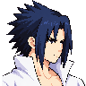
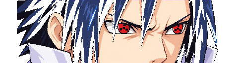
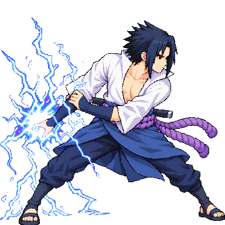

Review candidate, not approved. This 48-color diagnostic atlas has 35 title-style sources, including held throw v05 and stagger v06, plus seven older approved fallbacks: launched, down, KO, spin, airRecover, specialUp, and superPose. The normal strict game atlas uses 33 title-style candidates and nine fallbacks. SpecialUp v06 is archived for an endpoint mismatch and unresolved head probe; this player shows approved v02. Existing approved UI files were not promoted.



Art: latest throw v05 and stagger v06 are shown here for diagnosis but fail the strict scale gate; launched, down, KO, and superPose show older approved fallbacks. Portrait v02 follows the approved near-profile identity, with its far eye hidden by a front bang; U1's both-eyes direction is a composition review choice. Scale/assembly: spin, airRecover, and specialUp show older fallbacks. SpecialUp v06 is archived because its final pose differs from airHeavy f0 and its tucked head probe remains uncertain. Contact/gameplay: reach zones and hurtboxes need Claude's validation at the approved new stature. The down/KO floor diagnostic may conflict with the user-approved original oblique compositions. Showing a held source here does not make it a pass.